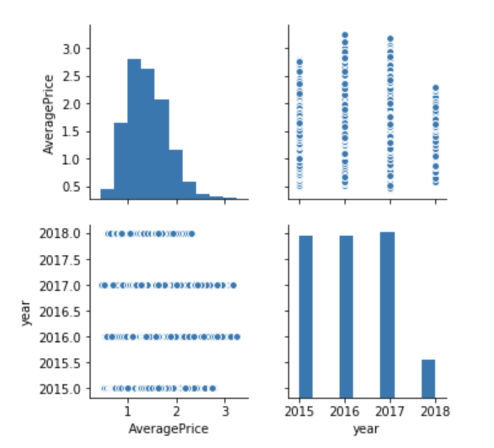

Quality: About This Data Set
This data has very high quality, there is no missing data and the format for each column is uniform. The data is comprehensive. The timeline for this dataset ranges from 2015 to mid 2018.
Is the data complete?
The data is relatively complete and covers different categories of avocado from different cities. However it would be nice if data from before 2015 are contained.
Is the data coherent?
Does it make sense relative to itself? Does it match your expectations? Are the distributions sensible? What is your evidence for this? The distribution of the average price follows a right skewed diagram, which is normal for a price distribution. The average prices is slightly higher in 2016 than in 2015, this also matches my expectation since the inflation. The average price range is the shortes in 2018, which also makes sense, since the data only includes the prices until middle 2018. The unit for each category is coherent. Here is a pairplot with average avocado price against year. 
Is the data correct?
The avocado is ranging from 0 to 3 dollars with a peak at 1.3 dollar. This is a reasonable price range for an avocado. The regions where those avocado is located specified in the data are also valid city names. The type of the avocado is either conventional or organic. Overall, the data is correct.